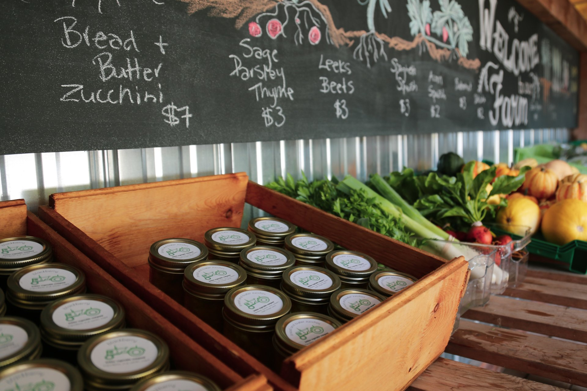
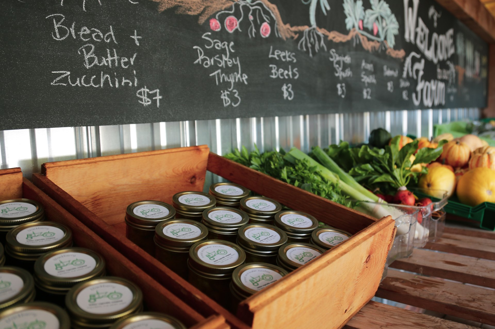

Kehler Vegetable Company
The Kehler Vegetable Company is a small family farm in black creek. we love growing great food for our community! We offer fresh vegetables, berries, squash, and non-GMO eggs at our farmstand.
Visit us today!
Where can you find us?
We are found at 8083 n island highway, black creek, BC.
 
